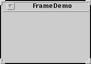
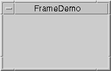

Feedback Form
|
|
Start of Tutorial > Start of Trail > Start of Lesson |
Search
Feedback Form |
A frame, implemented as an instance of theJFrameclass, is a window that has decorations such as a border, a title, and buttons for closing and iconifying the window. Applications with a GUI typically use at least one frame. Applets sometimes use frames, as well.
To make a window that's dependent on another window -- disappearing when the other window is iconified, for example -- use a dialog instead of a frame. To make a window that appears within another window, use an internal frame.
Here are two pictures of an empty-looking frame, each taken on a different platform.
Solaris Windows  
Note: The decorations on a frame are platform-dependent. You cannot change the decorations on a frame.
The following code creates and sets up the frame from the previous figure and makes it visible onscreen. You can find the whole program inFrameDemo.java.
The first line of code creates a frame with the constructor that lets you set the frame's title. The only other constructor provided bypublic static void main(String s[]) { JFrame frame = new JFrame("FrameDemo"); frame.addWindowListener(new WindowAdapter() { public void windowClosing(WindowEvent e) {System.exit(0);} }); //...create a blank label, set its preferred size... frame.getContentPane().add(emptyLabel, BorderLayout.CENTER); frame.pack(); frame.setVisible(true); }JFrameis a no-argument constructor.Next the code adds a window listener to the frame. The listener's implementation makes the program exit when the user closes the frame. This behavior is appropriate for this program because the program has only one frame, and closing the frame makes the program useless. If the program didn't exit, then it would continue to run but have no visible GUI and no way of making any GUI visible. See Responding to Window-Closing Events for more information.
The bold line in the code segment adds a blank label to the frame's content pane. If you're not already familiar with content panes and how to add components to them, please read Adding Components to the Content Pane.
The next line gives the frame a size, using the
packmethod. Thepackmethod sizes the frame so that all its contents are at or above their preferred sizes. An alternative topackis to establish a frame's size explicitly by callingsetSize. In general, usingpackis preferable to callingsetSize, sincepackleaves the frame's layout manager in charge of the frame's size, and layout managers are good at adjusting to platform dependencies and other factors that affect component size.The last line uses the
setVisiblemethod to make the frame appear onscreen. Sometimes you might see theshowmethod used instead ofsetVisible(true). The two usages are equivalent, but we usesetVisible(true)for consistency's sake.
Note: If any part of the frame has been realized you should invokesetVisiblefrom the event dispatching thread. For a definition of the term "realized" and information about the event dispatching thread, refer to Threads and Swing.
By default, when the user closes a frame onscreen, the frame is hidden. Although invisible, the frame still exists and the program can make it visible again. If you want different behavior, then you need to either register a window listener that handles window-closing events, or you need to specify default close behavior using thesetDefaultCloseOperationmethod. You can even do both.The argument to
setDefaultCloseOperationmust be one of the following values, which are defined in theWindowConstantsJFrameimplements):The default close operation is executed after the frame's window listeners (if any) handle the window-closing event. So, for example, assume that you specify that the default close operation is to dispose of the frame. You also implement a window listener that tests whether the frame is the last one and, if so, exits the application. Under these conditions, when the user closes a frame, the window listener will be called first. If it doesn't exit the application, then the default close operation -- disposing of the frame -- will then be performed.
DO_NOTHING_ON_CLOSE-- Don't do anything when the user's requests that the frame close. Instead, the program should probably use a window listener that performs some other action in itswindowClosingmethod.HIDE_ON_CLOSE(the default) -- Hide the frame when the user closes it. This removes the frame from the screen.DISPOSE_ON_CLOSE-- Hide and dispose of the frame when the user closes it. This removes the frame from the screen and frees up any resources used by it.For more information about handling window-closing events, see How to Write a Window Listener
The following tables list the commonly usedJFrameconstructors and methods. Other methods you're likely to call are defined by thejava.awt.Framejava.awt.WindowJFramedescends. These methods includepack,setSize,setVisible,setTitle, andgetTitle.Because each
JFrameobject has a root pane, frames have support for interposing input and painting behavior in front of the frame's children, placing children on different "layers", and for Swing menu bars. These topics are introduced in Using Top-Level Containers. and explained in detail in How to Use Root Panes.The API for using frames falls into these categories:
Creating and Setting Up a Frame Method Purpose JFrame()
JFrame(String)Create a frame that is initially invisible. Call setVisible(true)on the frame to make it visible. TheStringargument provides a title for the frame. You can also usesetTitleto set a frame's title.void setDefaultCloseOperation(int)
int getDefaultCloseOperation()Set or get the operation that occurs when the user pushes the close button on this frame. Possible choices are: These constants are defined in the
DO_NOTHING_ON_CLOSEHIDE_ON_CLOSE(the default)DISPOSE_ON_CLOSEWindowConstantsJFrameimplements.
Methods Related to the Root Pane Method Purpose void setContentPane(Container)
Container getContentPane()Set or get the frame's content pane. The content pane contains the frame's visible GUI components and should be opaque. JRootPane createRootPane()
void setRootPane(JRootPane)
JRootPane getRootPane()Create, set, or get the frame's root pane. The root pane manages the interior of the frame including the content pane, the glass pane, and so on. void setJMenuBar(JMenuBar)
JMenuBar getJMenuBar()Set or get the frame's menu bar to manage a set of menus for the frame. void setGlassPane(Component)
Component getGlassPane()Set or get the frame's glass pane. You can use the glass pane to intercept mouse events. void setLayeredPane(JLayeredPane)
JLayeredPane getLayeredPane()Set or get the frame's layered pane. You can use the frame's layered pane to put components on top of or behind other components.
All of the examples in this trail that are standalone applications useJFrame. The following table lists a few and tells you where each is discussed.
Example Where Described Notes FrameDemoThe Example Explained Displays a basic frame with one component. Framework-- A study in creating and destroying windows, in implementing a menu bar, and in exiting an application. ColorChooserDemoHow to Use Color Choosers A subclass of JFramethat adds components to the default content pane.TableDemoHow to Use Tables A subclass of JFramethat sets the frame's content pane.LayeredPaneDemoHow to Use Layered Panes Illustrates how to use a layered pane (but not the frame's layered pane). GlassPaneDemoThe Glass Pane Illustrates the use of a frame's glass pane. MenuDemoHow to Use Menus Shows how to put a JMenuBarin aJFrame.
|
|
Start of Tutorial > Start of Trail > Start of Lesson |
Search
Feedback Form |